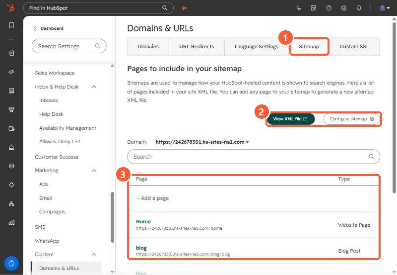

Short answer
In Domains & URLs, Sitemap, pick a domain to see its pages. HubSpot automatically adds live website pages and blog posts. Landing pages are not added automatically and must be added with Add a page. View XML file opens the sitemap, which is also at /sitemap.xml on your domain. My demo's sitemap lists the home page, a blog post, and the blog listing.
1. The Sitemap tab
Open Sitemap settings.


2. What is included
- Live website pages and blog posts: automatically.
- Landing pages: only if you add them.
- HubDB dynamic child pages: only if the parent page is in the sitemap. They appear in the XML, not in this list.
3. Should a landing page be in it?
Campaign landing pages are often meant to be reached from ads, not search. Add the ones you want found. To speed up a landing page, see speed up a landing page.